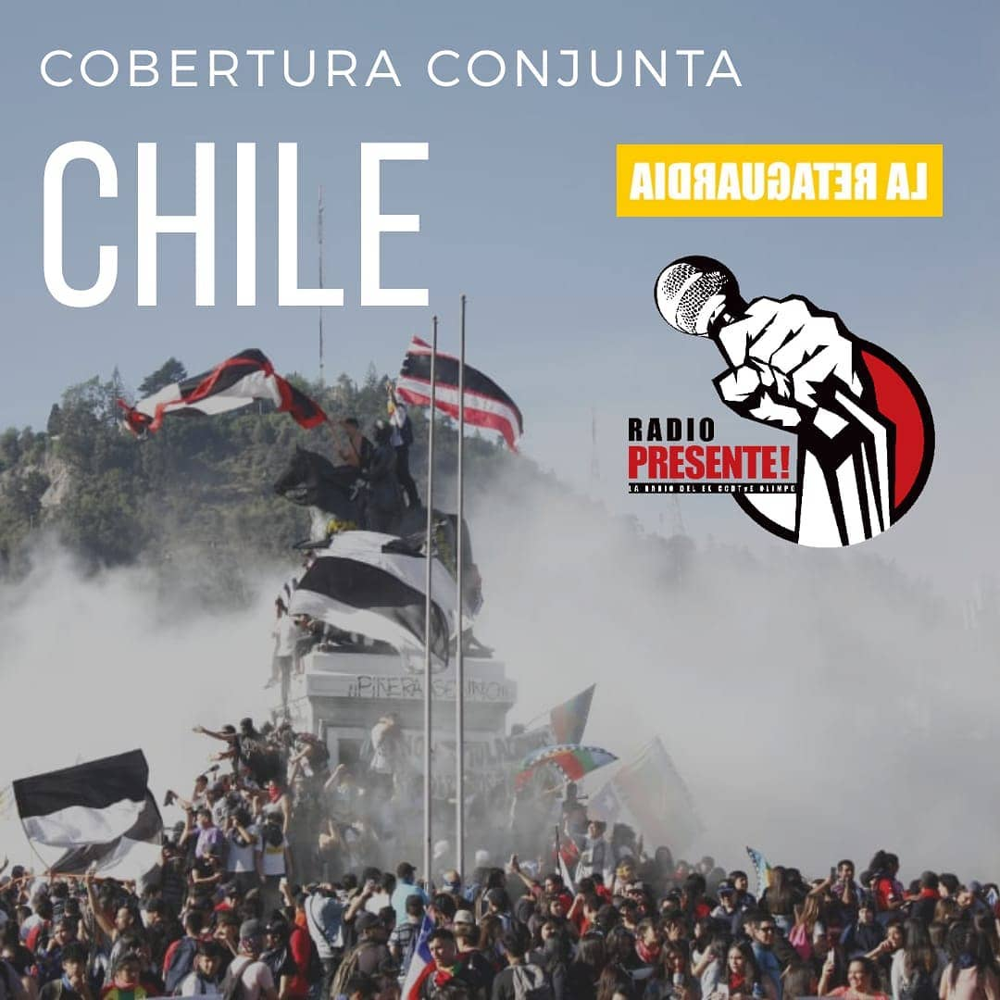

Qué hacemos
Radio Presente busca contribuir a la comunicación desde una mirada comunitaria, colaborativa, alternativa y popular.
Talleres


Coberturas




Actividades


Radio Abierta


Marcha Orletti-Olimpo


Decimos Presente porque Presente es la voz ante el silencio.
Presente es poner el cuerpo. Decir Presente es compromiso.
Decimos Presente a la imaginación y la creación.
Radio Presente nació a fines de 2013 con la idea de hacer radio entendiendo el lugar al que pertenecemos.
Construir desde la música, los sonidos, la palabra y el silencio en un Sitio de Memoria con el compromiso puesto en la memoria, la verdad y la justicia.
Hay un movimiento que nace de abajo hace ya varios años. Es como un susurro. Son las voces de los que deseamos gestar un mundo justo y solidario.
Nuestra herramienta es la palabra, creadora de los diferentes mundos, nos crea a nosotros como narraciones, como historia y memoria.
«El terror se basa en la incomunicación. Derrote al Miedo. Haga circular esta información».
Rodolfo Walsh. 1976
Radio Presente busca contribuir a la comunicación desde una mirada comunitaria, colaborativa, alternativa y popular.